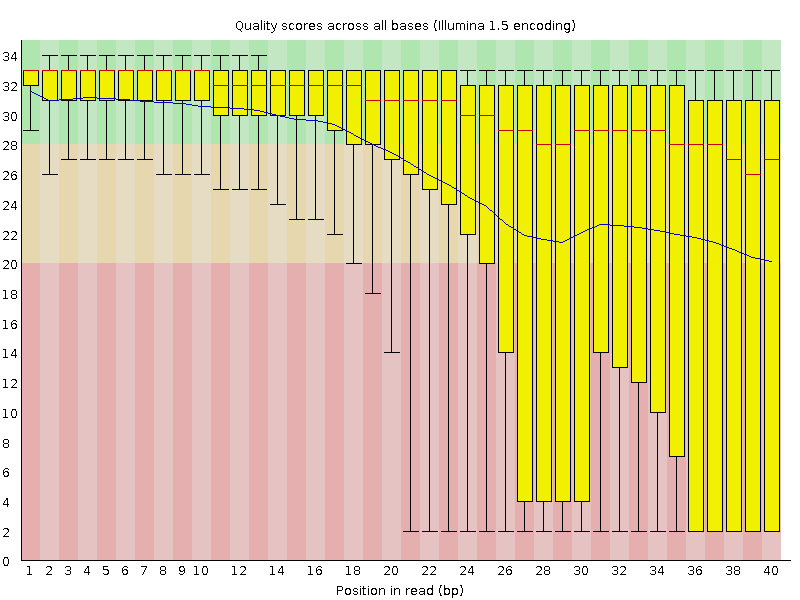
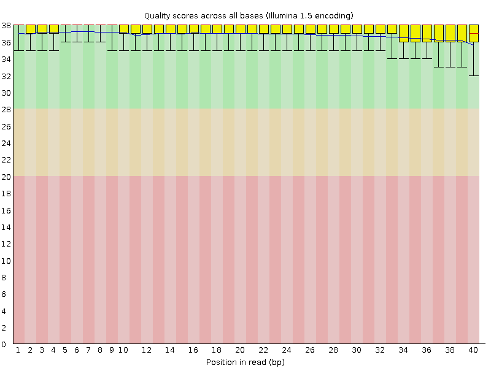
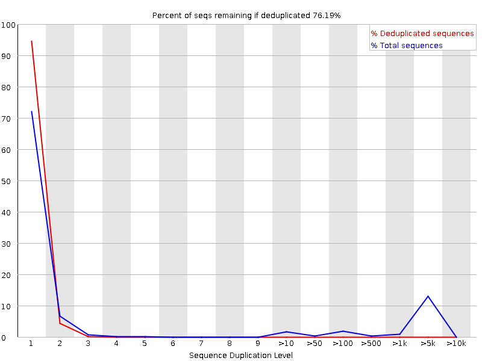
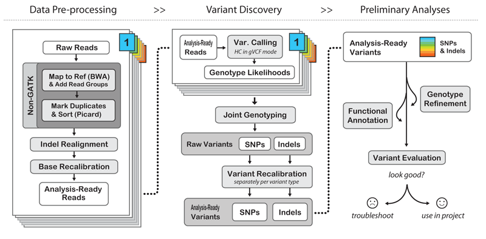
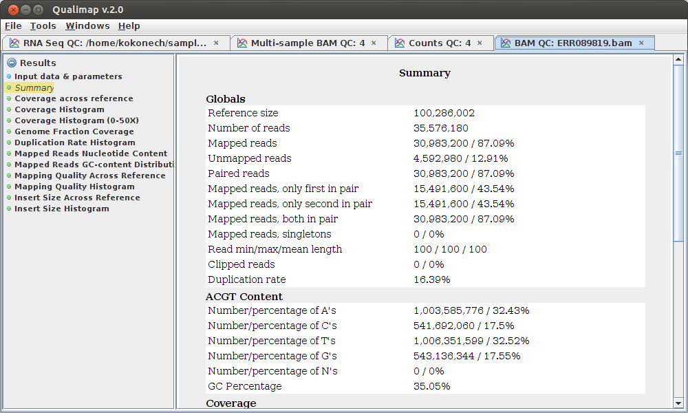

# Introduction to SNP calling Steps 1. Preprocess raw illumina reads * Evaluate base quality * adapter comtamination * Trimmomatic/sickle 2. Read mapping and quality control * mapping * sorting * mark PCR duplicate * BWA, Samtools, Picard 3. SNP calling with GATK [http://jinfengchen.github.io/Workshop/NGS_basic/SNP.html#1](http://jinfengchen.github.io/Workshop/NGS_basic/SNP.html#1) --- Example of low quality sequence:  http://www.bioinformatics.babraham.ac.uk/projects/fastqc --- Example of high quality sequence:  http://www.bioinformatics.babraham.ac.uk/projects/fastqc --- Adapter comtamination:  http://www.bioinformatics.babraham.ac.uk/projects/fastqc --- Quality control by Fastqc: ```shell $ module load fastqc $ fastqc -o ./ -f fastq ../reads/read1.fastq ../reads/read2.fastq ``` --- # Filter the raw reads by Trimmomatic or Sickle: * Trimmomatic can deal with adapter comtamination and low quality ```bash $ EXAMPLE! ``` * Sickle can deal with low quality ```shell $EXAMPLE ``` --- #Challenges with paired end reads * How to deal with trimmimg/filtering with PE data * How to do/use PE info in mapping reads * (find some graphics of this, how to place paired reads) --- The GATK Best Practices workflows for SNP/INDEL calling  [Best Practices GATK](https://www.broadinstitute.org/gatk/guide/topic?name=tutorials) --- # Read mapping using BWA ```shell #mapping $ module load bwa $ bwa aln ref.fq read1.fa > aln1.sai $ bwa aln ref.fq read2.fa > aln2.sai $ bwa sampe ref.fa aln1.sai aln2.sai read1.fq read2.fq > aln.sam ``` --- #SAM/BAM format __S__equence __A__lignment/__M__apping format. * Storing alignments as BLAST format is not efficient, short read data needed a simpler and more compact format. * [SAM specification](https://samtools.github.io/hts-specs/SAMv1.pdf) * BAM is a compressed and binary version of SAM, but they contain same information. * Files can be unsorted, sorted by read name, or sorted by genomic location --- # Explain sorting #sorting ```shell $ module load samtools $ samtools view -bS -o aln.raw.bam aln.sam $ samtools sort aln.raw.bam aln.sort ``` --- #mark duplicate $ java -jar MarkDuplicates.jar \ ASSUME_SORTED=TRUE \ REMOVE_DUPLICATES=TRUE \ VALIDATION_STRINGENCY=LENIENT \ INPUT=aln.sort.bam \ OUTPUT=aln.bam \ METRICS_FILE=aln.dupli #add readgroup $ java -jar AddOrReplaceReadGroups.jar \ INPUT=aln.bam \ OUTPUT=aln.rg.bam \ SORT_ORDER=coordinate \ CREATE_INDEX=true \ RGID=Rice01 \ RGLB=RiceLib1 \ RGPL=Illumina \ RGPU=Genomic \ RGSM=Rice01 VALIDATION_STRINGENCY=SILENT ``` --- Quality control on alignment file:  http://qualimap.bioinfo.cipf.es --- # Call SNPs using GATK toolkit ```shell $ java -Xmx1g -jar GenomeAnalysisTK.jar \ -T HaplotypeCaller \ -R $genome \ -I $BAM \ -o $prefix.gatk.raw.vcf \ -nct $cpu \ --genotyping_mode DISCOVERY \ -stand_call_conf 30 \ -stand_emit_conf 10 \ ``` Extract SNP and INDEL from raw variant calls ```shell $ java -Xmx1g -jar GenomeAnalysisTK.jar \ -T SelectVariants \ -R $genome \ -V $prefix.gatk.raw.vcf \ -selectType SNP \ -o $prefix.gatk.snp.raw.vcf $ java -Xmx1g -jar GenomeAnalysisTK.jar \ -T SelectVariants \ -R $genome \ -V $prefix.gatk.raw.vcf \ -selectType INDEL \ -o $prefix.gatk.indel.raw.vcf ``` --- Filter low quality SNP by hardfilter ```shell $ java -Xmx1g -jar GenomeAnalysisTK.jar \ -T VariantFiltration \ -R $genome \ -V $prefix.gatk.snp.raw.vcf \ --filterExpression "QD < 2.0 || FS > 60.0 || MQ < 40.0 \ || MQRankSum < -12.5 || ReadPosRankSum < -8.0" \ --filterName my_snp_filter \ -o $prefix.gatk.snp.hardfilter.vcf \ ``` --- Filter SNP overlapping with repeat sequence ```shell $ java -Xmx1g -jar GenomeAnalysisTK.jar \ -T VariantFiltration \ -R $genome \ --variant $prefix.gatk.snp.pass.vcf \ -o $prefix.gatk.snp.pass.repeat.vcf \ --mask $repeat \ --maskName "REPEAT" ``` --- Compare the results from different VCF files ```shell $ module load vcftools $ bgzip ALL.gatk.snp.1.vcf $ tabix -p vcf ALL.gatk.snp.1.vcf.gz $ vcf-compare ALL.gatk.snp.raw.vcf.gz ALL.gatk.snp.1.vcf.gz ALL.gatk.snp.2.vcf.gz ``` ```shell 7 ALL.gatk.snp.1.vcf.gz (1.3%) ALL.gatk.snp.raw.vcf.gz (1.3%) 9 ALL.gatk.snp.2.vcf.gz (1.7%) ALL.gatk.snp.raw.vcf.gz (1.7%) 527 ALL.gatk.snp.1.vcf.gz (98.7%) ALL.gatk.snp.2.vcf.gz (98.3%) \ ALL.gatk.snp.raw.vcf.gz (97.1%) ``` --- Workflow of variant calling [Recommended workflows for variant discovery analysis with GATK](https://www.broadinstitute.org/gatk/guide/topic?name=tutorials) ---